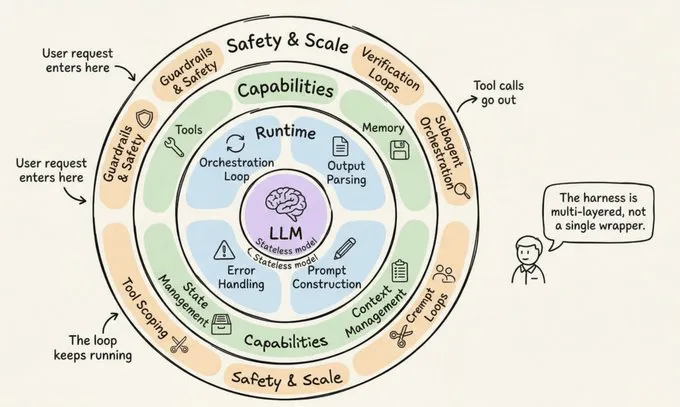
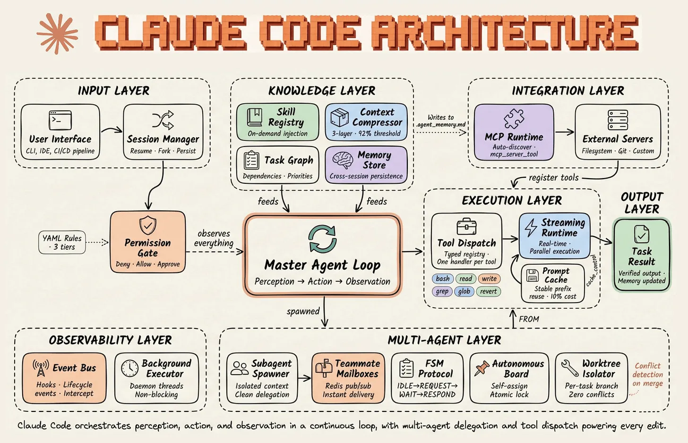
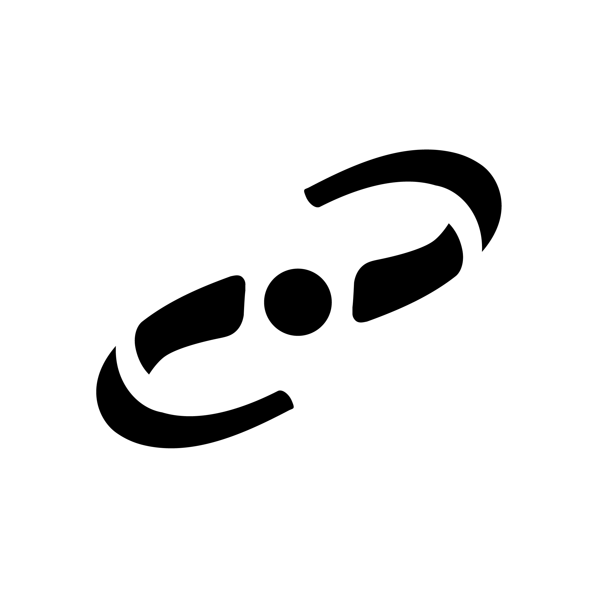
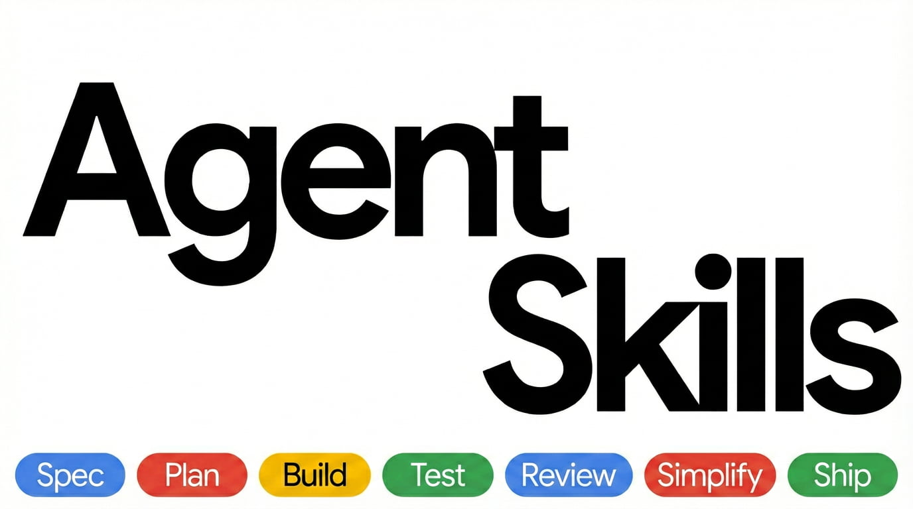
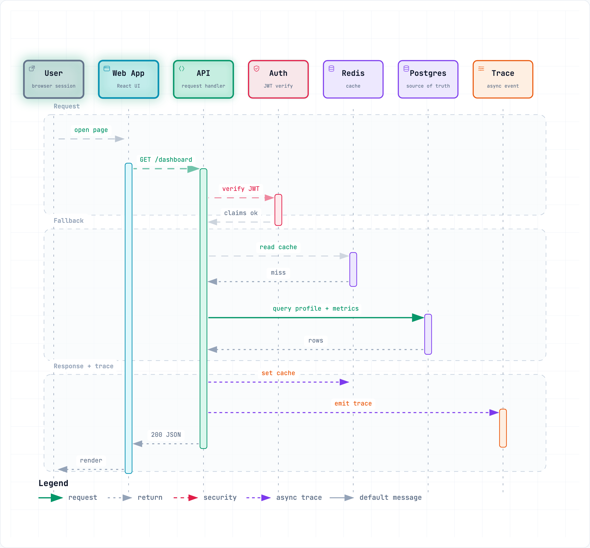
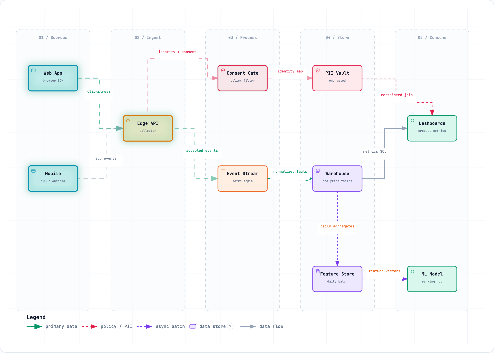
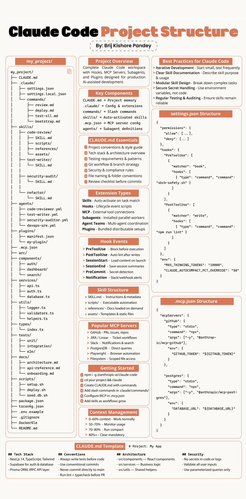

claude 실행에서 브라우저로 Team 계정 로그인/context가 전후로 얼마나 달라졌는가winget install Anthropic.ClaudeCode · CMD는 install.cmd 방식
| /context | 지금 무엇이 얼마나 들어있는지 본다 |
| /clear | 대화를 비우고 새로 시작한다 주제가 바뀌면 무조건 |
| /compact | 요약해 공간을 확보한다 /compact API 변경 중심으로 |
| /model | 모델을 바꾼다 작업 난이도에 맞춰 |
| /usage · /cost | 사용량과 비용을 본다 |
| /diff | AI가 무엇을 고쳤는지 본다 |
| /rewind | 체크포인트로 코드·대화를 되돌린다 |
| /resume | 이전 대화를 이어간다 |
| /branch | 현재 지점에서 대화를 분기한다 |
| /btw | 기록에 남기지 않고 물어본다 컨텍스트를 늘리지 않는다 |
| /status | 계정 · 모델 · 프로젝트 상태 |
| /init | 프로젝트를 읽고 CLAUDE.md를 만든다 RECIPE 02 |
| /memory | 메모리 파일을 직접 편집한다 RECIPE 02 |
| /permissions | 허용 · 차단 규칙을 정한다 RECIPE 02 |
| /hooks | 훅을 확인하고 등록한다 RECIPE 03 |
| /skill-creator: | 나만의 스킬을 만든다 공식 플러그인 · 설치 필요 |
| /mcp | 외부 도구 서버를 연결한다 RECIPE 04 |
| /plugin | 플러그인을 설치하고 배포한다 RECIPE 04 |
| /code-review | 코드를 검토한다 low ~ max · --fix 로 바로 수정 |
| /security-review | 보안 취약점을 검토한다 |
| /verify | 실제로 앱을 띄워 동작을 확인한다 |
| /doctor | 설정을 진단하고 고친다 |
| Shift + Tab | 권한 모드를 순환한다 Plan 모드 진입이 여기 |
| Esc | 즉시 중단한다 컨텍스트는 유지된다 |
| Esc Esc | 되감기 메뉴 = /rewind |
| Ctrl + R | 명령 기록 검색 |
/plugin marketplace add anthropics/claude-plugins-official/plugin → Installed 탭 · claude plugin disable · uninstall| 플러그인 | 설치 · 클릭하면 복사 | 확인 | |
|---|---|---|---|
| 01 | context7최신 문서 조회 (MCP) | /plugin install context7@claude-plugins-official | "Spring Boot 3.4 문서를 조회해줘" → 도구 호출이 뜨는지 |
| 02 | playwright브라우저로 화면 검증 (MCP) | /plugin install playwright@claude-plugins-official | "localhost:5173 을 열어줘" → 브라우저 도구 호출이 뜨는지 |
| 03 | ponytail가장 단순한 해법을 먼저 고른다 | /plugin marketplace add DietrichGebert/ponytail | 새 세션에서 답변이 짧아지고 단순해지는지 |
| 04 | remotionReact로 영상 만들기 | /plugin marketplace add remotion-dev/claude-code-plugin | / 를 눌러 remotion 항목이 보이는지 |
| 05 | archify아키텍처 · 시퀀스 도식 | npx skills add tt-a1i/archify -g | / 를 눌러 archify 스킬이 보이는지 |
| 06 | eli5코드 · 오류를 눈높이에 맞춰 설명 | $ git clone https://github.com/DreambigOu/ELI5.git | "이 오류를 초등학생에게 설명해줘" → eli5 스킬이 쓰이는지 |
| 07 | claude-mem세션 기억 저장 · 주입 | /plugin marketplace add thedotmack/claude-mem | Claude Code 재시작 후 /mcp 에 claude-mem 이 보이는지 |
claude plugin uninstall <이름>@claude-plugins-official --scope local

| 단계 · ↻ 태스크마다 반복 | superpowers · 자동으로 발동 | agent-skills · 명령으로 실행 | |
|---|---|---|---|
| 01 | 요구사항·스펙 | brainstorming질문으로 설계를 다듬고 조각별로 승인 | interview-me한 번에 한 질문으로 요구사항 정리/spec코드 전에 구조화된 스펙 |
| 02 | 계획 | writing-plans2~5분짜리 태스크 · 파일 경로 · 검증 단계using-git-worktrees격리된 브랜치에서 작업 | /plan작고 원자적인 태스크/constraints품질 기준을 CONSTRAINTS.md에 |
| 03 | 구현↻ | subagent-driven-development태스크마다 서브에이전트가 구현 · 검토 | /build한 조각씩 구현 · 테스트 · 커밋 |
| 04 | 실행·검증↻ | test-driven-developmentRED → GREEN → REFACTOR 강제systematic-debugging4단계 원인 추적 | /testTDD · 버그는 재현 테스트부터 |
| 05 | 리뷰↻ | requesting-code-review태스크 사이마다 심각도별 점검 | /review5축 리뷰 (정확성·가독성·구조·보안·성능)/code-simplify동작은 그대로, 복잡도만 줄임 |
| 06 | 마무리 | finishing-a-development-branchmerge · PR · 유지 · 폐기 선택 | /ship병렬 점검 후 go / no-go |
<input type="date">)cd edu-stock-chartclaude · claude-mem 은 설치 뒤 Claude Code 재시작/ponytail-audit
가장 효과 큰 1개만 적용하고 테스트를 돌려줘
Spring Boot 3.4에서 spring.jpa.hibernate.ddl-auto 값과 기본값을 알려줘. use context7
Spring Boot 3.4에서 spring.jpa.hibernate.ddl-auto 값과 기본값을 알려줘
resolve-library-id → query-docs 도구 호출이 뜨는가/learn-codebase
/mcp 에 claude-mem 이 보이는가/code-review 현재 변경분(diff)이나 PR 번호를 검토. 강도 low ~ max 선택, --fix 로 바로 수정code-review@claude-plugins-official 병렬 에이전트 4개가 PR을 검토 — CLAUDE.md 준수 2 · 버그 1 · 변경 이력(git blame) 1/security-review 보안 점검 · /simplify 재사용 · 단순화 정리/code-reviewgh 가 필요하다. ultra 강도는 클라우드에서 돌고 별도 과금된다browser_navigate · browser_snapshot · browser_click · browser_fill_form · browser_take_screenshotbrowser_console_messages) · 네트워크 실패(browser_network_requests)까지 본다localhost:5173 을 열어서 차트가 그려지는지, 콘솔 오류가 없는지 확인해줘이 오류를 초등학생에게 설명해줘

edu-stock-chart의 주식 조회 흐름을 archify로 시퀀스 다이어그램으로 그려줘remotion으로 edu-stock-chart를 소개하는 15초 영상을 만들어줘
클릭하면 확대/review)skills/ · agents/ 는 .claude/ 아래에 둔다 · 에이전트 파일은 .md · PreCommit 은 공식 훅 이벤트가 아니다| 01 | 조직 정책 파일 | 그 PC의 모든 사용자 · 개인이 제외할 수 없다 |
| 02 | ~/.claude/CLAUDE.md | 내 모든 프로젝트 · 나만 |
| 03 | ./CLAUDE.md | 이 프로젝트 · 팀과 공유 (git) |
| 04 | ./CLAUDE.local.md | 이 프로젝트 · 나만 (.gitignore) |
| 05 | 하위 폴더 CLAUDE.md | 그 폴더의 파일을 읽을 때만 로드 |
# edu-stock-chart 주식 시세를 조회해 차트로 보여 주는 교육용 웹 서비스 프로젝트 설명 ## Tech Stack 기술 스택 - Spring Boot 3.4, Java 21, Gradle 8.6, JPA + H2, Lombok - UI: Vite 6 + Chart.js 4 (edu-stock-chart-ui) ## Commands 명령어 - `gradlew.bat build` — 빌드 + 테스트 - `gradlew.bat test` — 단위 테스트 - `gradlew.bat bootRun` — 실행 (http://localhost:8080) ## Architecture 프로젝트 구성 - 패키지: `kr.co.koscom.edu.stockchart` - 컨트롤러 → 서비스 → 리포지토리 (로직은 서비스에) ## Git Git 규칙 - 브랜치: `feature/*` → `main` - 커밋 메시지: 한글, `type: 요약`
DB 스키마를 바꿀 때 → docs/db-schema.md (@import 는 시작 시 함께 로드되어 절약되지 않는다)
| 단계 | 입력 · 클릭하면 복사 | 확인할 것 | |
|---|---|---|---|
| 01 | 준비프로젝트 폴더에서 Claude Code 실행 | cd edu-stock-chartclaude | 프롬프트 입력창이 열린다 |
| 02 | 초안 만들기/init 이 코드를 분석해 CLAUDE.md 를 만든다 | /init | edu-stock-chart/CLAUDE.md 가 생긴다. 파일이 이미 있으면 덮어쓰지 않고 개선안을 제안한다 |
| 03 | 정리하기초안에서 필요한 것만 남긴다 | CLAUDE.md를 정리해줘. 기술 스택, 빌드 · 테스트 · 실행 명령, 패키지 구성과 계층 규칙, Git 규칙, 프로젝트 설명만 남기고 코드를 읽으면 알 수 있는 내용과 파일별 설명은 지워줘. 100줄 이하로. | 한 줄씩 읽는다. 빼도 실수하지 않을 줄은 지운다 |
| 04 | 규칙 추가우리 팀 규칙을 한두 줄 넣는다 | CLAUDE.md의 Git 섹션에 규칙을 추가해줘. 브랜치는 feature/* 에서 작업해 main 으로 PR 머지하고, 커밋 메시지는 한글로 "type: 요약" 형식으로 쓴다. | Git 섹션에 두 줄이 늘었는가 (규칙은 예시이니 팀 기준으로 바꾼다) |
| 05 | 로드 확인CLAUDE.md 가 읽히는지 본다 | /context | 목록의 Memory files 아래에 CLAUDE.md 가 보이는가 |
| 06 | 새 세션 검증기억 없이 시작해도 아는지 묻는다 | /exitclaude이 프로젝트 테스트는 어떻게 실행해? | 코드를 다시 읽지 않고 CLAUDE.md 의 명령으로 답하는가 |